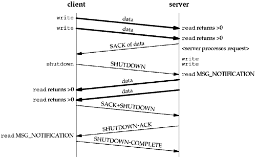

9.13 shutdown Function
The shutdown function that we discussed in Section 6.6 can be used with an SCTP endpoint using the one-to-one-style interface. Because SCTP's design does not provide a half-closed state, an SCTP endpoint reacts to a shutdown call differently than a TCP endpoint. When an SCTP endpoint initiates a shutdown sequence, both endpoints must complete transmission of any data currently in the queue and close the association. The endpoint that initiated the active open may wish to invoke shutdown instead of close so that the endpoint can be used to connect to a new peer. Unlike TCP, a close followed by the opening of a new socket is not required. SCTP allows the endpoint to issue a shutdown, and after the shutdown completes, the endpoint can reuse the socket to connect to a new peer. Note that the new connection will fail if the endpoint does not wait until the SCTP shutdown sequence completes. Figure 9.5 shows the typical function calls in this scenario.

Note that in Figure 9.5, we depict the user receiving the MSG_NOTIFICATION events. If the user had not subscribed to receive these events, then a read of length 0 would have been returned. The effects of the shutdown function for TCP were described in Section 6.6. The shutdown function howto holds the following semantics for SCTP:
SHUT_RD | The same semantics as for TCP discussed in Section 6.6; no SCTP protocol action is taken. | SHUT_WR | Disables further send operations and initiates the SCTP shutdown procedures, which will terminate the association. Note that this option does not provide a half-closed state, but does allow the local endpoint to read any queued data that the peer may have sent prior to receiving the SCTP SHUTDOWN message. | SHUT_RDWR | Disables all read and write operations, and initiates the SCTP shutdown procedure. Any queued data that was in transit to the local endpoint will be acknowledged and then silently discarded. |
|